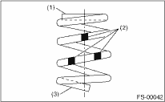
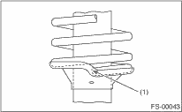
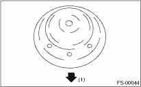

1. Before installing the coil spring, strut mount, etc. on the strut, check the condition of air inside the strut damper mechanism to make sure that excessive air is not inhibiting the creation of appropriate damping force.
2. Checking for presence of air
(1) Place the strut vertically with the piston rod facing up.
(2) Move the piston rod to the center of its entire stroke.
(3) While holding the piston rod end with fingers, move the rod up and down.
(4) If the piston rod moves 10 mm (0.39 in) or more in the former step, purge air from the strut.
3. Air purging procedure
(1) Place the strut vertically with the piston rod facing up.
(2) Fully extend the piston rod.
(3) With the piston rod fully extended, place the piston rod side down. The strut must stand vertically.
(4) Fully retract the piston rod.
(5) Repeat 3 or 4 times from the first step.
NOTE:
After purging air from the strut, be sure to place the strut with the piston rod facing up. If the strut is laid down for any reason, check for the entry of air in accordance with “Checking for presence of air”
4. Using a coil spring compressor, compress the coil spring.
NOTE:
Make sure that the vertical installing direction of coil spring is as shown in the figure.

|
(1) |
Flat (top side) |
|
(2) |
Identification paint |
|
(3) |
Inclined (bottom side) |
5. Set the coil spring correctly so that its end face seats well in the spring seat as shown in the figure.

|
(1) |
Coil spring end face |
6. Install the helper and dust cover to the piston rod.
7. Pull the piston rod fully upward, and install the rubber seat and spring seat.
NOTE:
Position the upper spring seat as shown in the figure.

|
(1) |
Outside the vehicle |
8. Install the strut mount to piston rod, and temporarily attach and tighten a new self locking nut.
9. Using a hex wrench to prevent strut rod from turning, tighten the self-locking nut with the ST.
| ST 927760000 | STRUT MOUNT SOCKET |
Tightening torque:
55 N·m (5.6 kgf-m, 41 ft-lb)

10. Loosen the coil spring compressor carefully.